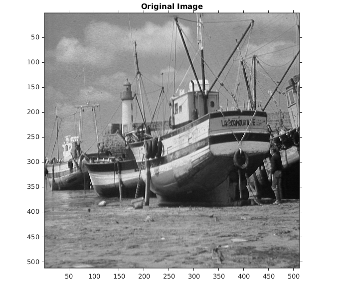
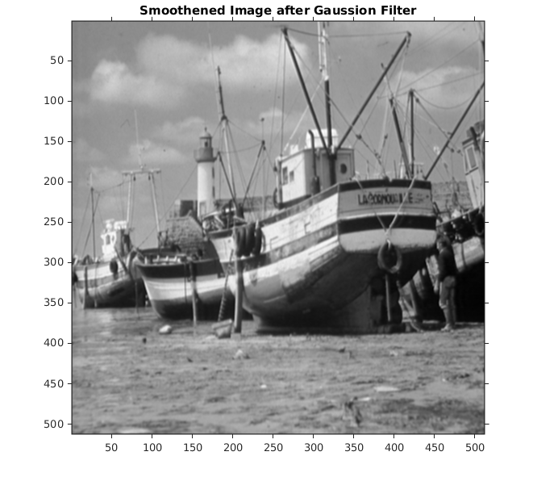
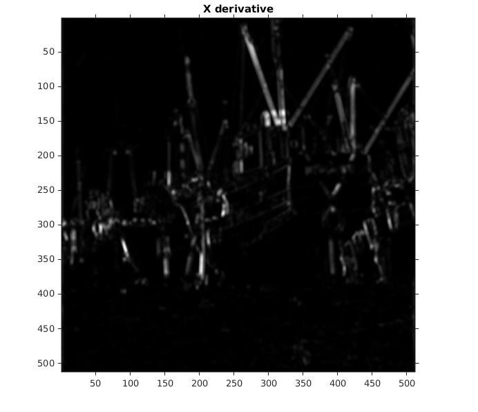
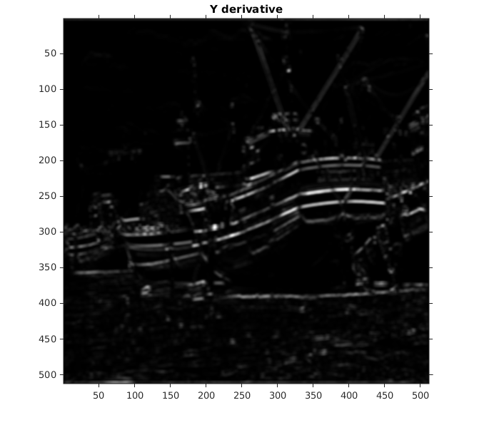
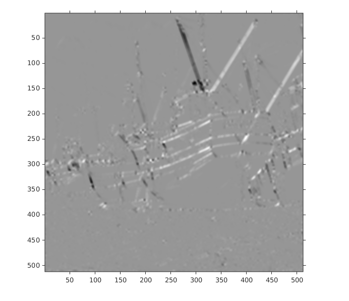
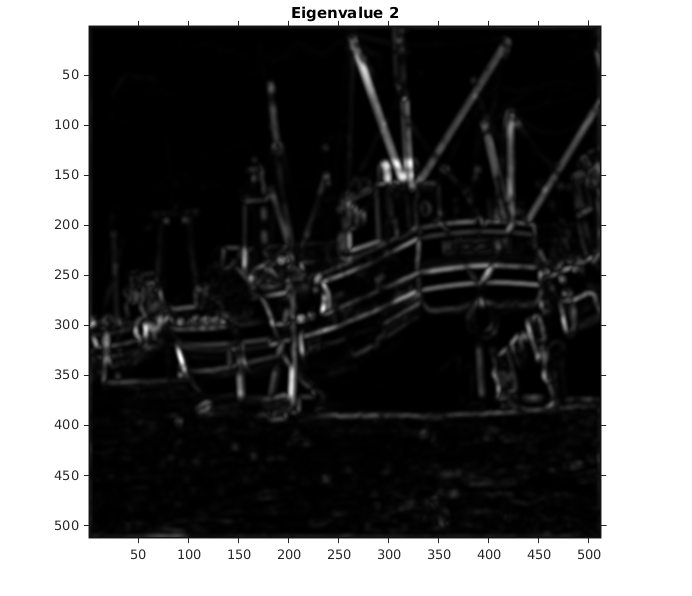
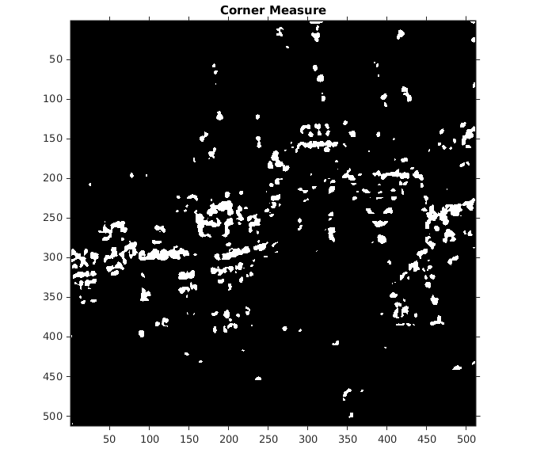
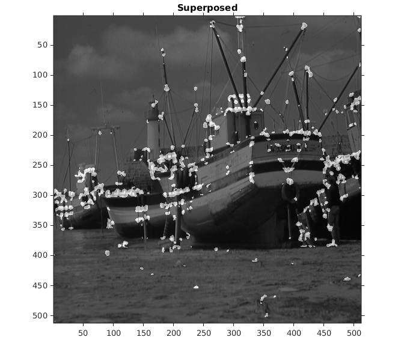

function [] = myHarrisCornerDetector()
imstruct = load('../data/boat.mat');
img=imstruct.imageOrig;
figure, imshow(mat2gray(img)),colorbar;title('Original Image');
I=im2double(img);
I = I/max(max(I));
G = fspecial('gaussian', [3 3] ,1);
I = imfilter(I, G, 'same');
figure, imshow(mat2gray(I)),colorbar;title('Smoothened Image after Gaussion Filter');
[Ix Iy] = imgradientxy(I);
g = fspecial('gaussian', [6 6] ,2);
Ix2 = imfilter(Ix.^2, g, 'same');
figure, imshow(mat2gray(Ix2)),colorbar;title('X derivative');
Iy2 = imfilter(Iy.^2, g, 'same');
figure, imshow(mat2gray(Iy2)),colorbar;title('Y derivative');
IxIy = imfilter(Ix.*Iy, g, 'same');
figure, imshow(mat2gray(IxIy)),colorbar,title('Derivative Product Ix*Iy');
[r c]=size(Ix2);
R = zeros(r, c);
cornerMeasure = zeros(r, c);
E1 = zeros(r, c);
E2 = zeros(r, c);
k = 0.06;
for i=2:r-1
for j=2:c-1
Ix21=sum(sum(Ix2(i-1:i+1,j-1:j+1)));
Iy21=sum(sum(Iy2(i-1:i+1,j-1:j+1)));
IxIy1= sum(sum(IxIy(i-1:i+1,j-1:j+1)));
M=[Ix21, IxIy1; IxIy1, Iy21];
e = eig(M);
E1(i,j)=min(e);
E2(i,j)=max(e);
R(i,j) = e(1)*e(2)-k*(e(1)+e(2))^2;
end
end
superposed = zeros(r, c);
cornerMeasure = (R>0.5)*250;
superposed = img+cornerMeasure;
figure, imshow(mat2gray(E1)),colorbar;title('Eigenvalue 1');
figure, imshow(mat2gray(E2)),colorbar;title('Eigenvalue 2');
figure, imshow(mat2gray(cornerMeasure)),colorbar;title('Corner Measure');
figure, imshow(mat2gray(superposed)),colorbar;title('Superposed');
Parameters Involved
k = 0.06
Gaussion Kernel Used for Smoothing with s.d. = 1 and windowSize = 3
Gaussion Kernel Used for Derivative with s.d. = 2 and windowSize = 6
    

  